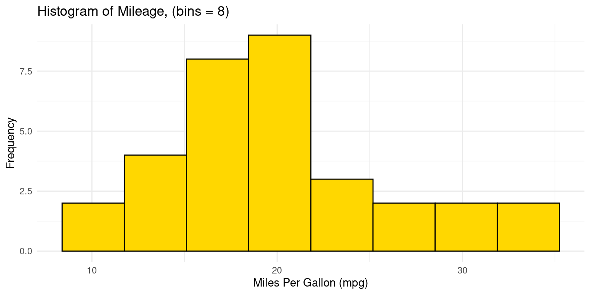
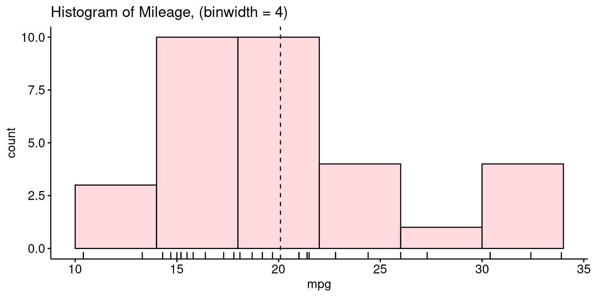
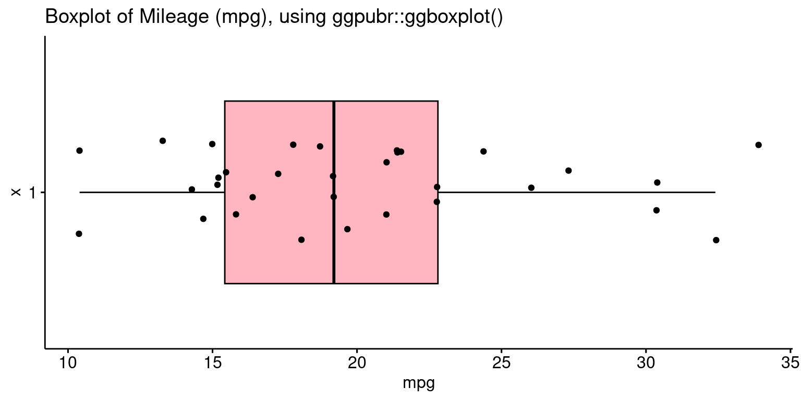

# Load the required libraries, suppressing annoying startup messages
library(dplyr, quietly = TRUE, warn.conflicts = FALSE)
library(tibble, quietly = TRUE, warn.conflicts = FALSE)
library(ggplot2, quietly = TRUE, warn.conflicts = FALSE) # For data visualization
library(ggpubr, quietly = TRUE, warn.conflicts = FALSE) # For data visualization
library(rmarkdown, quietly = TRUE, warn.conflicts = FALSE)
library(knitr, quietly = TRUE, warn.conflicts = FALSE)
library(kableExtra, quietly = TRUE, warn.conflicts = FALSE)
library(ggthemes)Continuous Data (2 of 2)
Chapter 11, Last updated: Dec 30, 2023
Exploring Univariate Continuous Data using ggplot2 and ggpubr
This chapter demonstrates the use of the popular ggplot2 and ggpubr packages to further explore univariate, continuous data.
ggplot2: In theggplot2package for instance, the functiongeom_boxplot()produces box plots,geom_violin()creates violin plots, andgeom_histogram()andgeom_density()generate histograms and density plots, respectively. The relatedggbeeswarmpackage can be used for creating bee swarm plots.ggpubr: Theggpubrpackage in R augmentsggplot2by offering tools for creating publication-ready plots. It enables simplified plotting with easy-to-use functions like gghistogram(), ggdensity(), ggboxplot(), ggviolin, and makes it easy to merge multiple plots withggarrange(), and provides specialized themes for a polished look. Essentially,ggpubrmergesggplot2’s extensive customization with the ease of creating visually appealing and informative plots.We load the necessary packages, including
ggplot2,dplyrandggthemespackages. The packageggthemesallows us to use a variety of themes.
- Data: Suppose we run the following code to prepare the
mtcarsdata for subsequent analysis and save it in a tibble calledtb.
# Read the mtcars dataset into a tibble called tb
data(mtcars)
tb <- as_tibble(mtcars)
# Convert relevant columns into factor variables
tb$cyl <- as.factor(tb$cyl) # cyl = {4,6,8}, number of cylinders
tb$am <- as.factor(tb$am) # am = {0,1}, 0:automatic, 1: manual transmission
tb$vs <- as.factor(tb$vs) # vs = {0,1}, v-shaped engine, 0:no, 1:yes
tb$gear <- as.factor(tb$gear) # gear = {3,4,5}, number of gears- Let’s take a closer look at some of the most effective ways of Visualizing Univariate Continuous Data using
ggplot2and related packages, including
Bee Swarm plots using
ggbeeswarmHistograms using
ggplot2andggpubrPDF and CDF Density plots using
ggplot2andggpubrBar plots using
ggplot2Box plots using
ggplot2andggpubrViolin plots using
ggplot2andggpubrQuantile-Quantile (Q-Q) Plots using
ggplot2
Note that it is inconvenient to create Stem-and-Leaf plots using ggplot2.
Bee Swarm plot using ggbeeswarm
The bee swarm plot is an alternative to the box plot, where each point is plotted in a manner that avoids overlap.
We use the
ggbeeswarmpackage on thempgcolumn of thetbtibble.
library(ggplot2)
library(ggbeeswarm) # Necessary for geom_beeswarm()
ggplot(tb,
aes(x = 1,
y = mpg)) +
geom_beeswarm() +
labs(title = "Bee Swarm plot of Miles Per Gallon (mpg)",
y = "Miles Per Gallon (mpg)") +
theme_minimal() - Discussion:
Initially, we declare our dataset and the aesthetic mappings, defining how variables in the data are visually represented. For the bee swarm plot, we only need a y aesthetic, which is
mpg. We set the x aesthetic to 1 as a placeholder, because bee swarm plots require an x aesthetic, but we only have one variable.Following that, we append a bee swarm plot using the
geom_beeswarm()function.We use the
labs()function to label the plot.We then adopt a minimalist theme by using
theme_minimal()to give our plot a sleek and simple look.
Histogram using ggplot2
Histogram with binwidth
- The following code creates a histogram using the
ggplot2package. Here, we pre-specify the bin width and the resulting number of bins in the histogram depend on the range of the data.
ggplot(tb,
aes(x = mpg)) +
geom_histogram(binwidth = 4,
fill = "gold",
color = "black") +
theme_minimal() +
labs(title = "Histogram of Mileage, using package `ggplot2` (setting binwidth = 4)",
x = "Miles Per Gallon (mpg)", y = "Frequency")
- Discussion:
The code
ggplot(tb, aes(x = mpg))initializes a plot using thetbdata frame, mapping thempgcolumn to the x-axis.The histogram is created with
geom_histogram(), using an adjustablebinwidth = 4. Given this bin width, the resulting number of bins in the histogram depend on the range ofmpg.The
binwidthargument specifies the width of the bins in the histogram, and we have chosen4as an arbitrary width.We use
fillandcolorto set the bar colors to be gold with a black border.A clean appearance is achieved with
theme_minimal(), and titles and labels are added usinglabs(). [1]
Histogram with bins
- We could alternately set the number of bins in the histogram, instead of specifying the bin width. In this case, the bin-width gets calculated depending on the range of the data and the specified number of bins.
ggplot(tb,
aes(x = mpg)) +
geom_histogram(bins = 8,
fill = "gold",
color = "black") +
theme_minimal() +
labs(title = "Histogram of Mileage, using package `ggplot2` (setting bins = 8)",
x = "Miles Per Gallon (mpg)", y = "Frequency")- Discussion:
We instruct R to create a histogram having 8 bins of equal width, by setting
bins = 8 ingeom_histogram()`The width of each bin is adjusted by dividing the range of
mpgby the number of specified bins.
Histogram with bin range
- Alternately, we can specify custom bin ranges in a histogram. In this this approach, we supply a vector of breakpoints which defines the range of each bin. For example, the following code defines histogram bins with ranges of 5-10, 10-15, 15-20, 20-25, 25-30, 30-35, 35-40, for the
mpgvariable
ggplot(tb,
aes(x = mpg)) +
geom_histogram(breaks = seq(5, 40, by = 5),
fill = "gold",
color = "black") +
theme_minimal() +
labs(title = "Histogram of Mileage, using package `ggplot2` (setting breaks of 5)",
x = "Miles Per Gallon (mpg)", y = "Frequency")
- Discussion:
ggplot(tb, aes(x = mpg))initializes a ggplot object with thetbdata frame and sets thempgcolumn as the x-axis variable.geom_histogram()adds a histogram layer, in whichbreaks = seq(5, 40, by = 5)specifies bin edges using a sequence that starts at 5, ends at 40, and increases by 5 units. This results in bins like [5,10), [10,15), and so on.
Histogram using ggpubr
- Recreating a histogram with binwidth of 4, using
ggpubr:
library(ggpubr)
gghistogram(tb,
x = "mpg",
binwidth = 4,
add = "mean",
rug = TRUE,
color = "black" ,
fill = "lightpink",
title = "Histogram of Mileage, using package `ggpubr` (setting binwidth = 4) "
)- Discussion:
Here, we’re invoking the
gghistogram()function fromggpubrto craft a histogram. The data source is specified astb, and the variable of interest ismpg.x = "mpg": This denotes the variable from tb we’re visualizing.binwidth = 4: Each bin in the histogram will span a range of 4 units ofmpg.add = "mean": Superimposes the mean ofmpgon the histogram.rug = TRUE: Includes a rug plot at the base, which displays individual data points.color = "black": The outline of the bars will be in black.fill = "lightpink": Bars in the histogram will be filled with a light pink shade.title =: Gives a descriptive title to the histogram.In sum, we’re visualizing the distribution of the mpg variable from the
tbdataset as a light pink histogram, emphasized with black borders, with a bin width of 4 units. We’ve also marked the mean value and showcased individual data points as a rug plot beneath the histogram.
- Recreating a histogram with 8 bins, using package
ggpubr:
library(ggpubr)
gghistogram(tb,
x = "mpg",
bins = 8,
add = "mean",
rug = TRUE,
color = "black" ,
fill = "lightpink",
title = "Histogram of Mileage, using package `ggpubr` (setting bins = 8) "
)
- Discussion:
In essence, the difference is that this code visualizes the mpg data from the tb dataset as a histogram with 8 bins, set using bins = 8.
Probability Density Function (PDF) plot using ggplot2
- Recall that this type of plot shows the distribution of a single variable, and the area under the curve represents the probability of an observation falling within a particular range of values. The following code generates it using
ggplot2:
ggplot(tb,
aes(x = mpg)) +
geom_density(fill = "gold") +
theme_minimal() +
labs(title = "Probability Density Function of Miles Per Gallon (mpg)",
x = "Miles Per Gallon (mpg)", y = "density") - Discussion:
We designate our data source and the aesthetic mappings using the
ggplot()function. The aesthetic mapping for x ismpg.Subsequently, we append a density plot to our plot by using the
geom_density()function. We fill the area under the curve by settingfillto “gold”.
PDF using ggpubr
- The following R code creates a PDF of the
mpgvariable in thetbdataset, using theggdensity()function from theggpubrpackage.
library(ggpubr)
ggdensity(tb,
x = "mpg",
add = "mean",
rug = TRUE,
color = "black" ,
fill = "lightpink",
title = "PDF of Miles Per Gallon (mpg), using ggpubr::ggdensity()",
xlab = "Mileage (mpg)",
ylab = "Probability Density Function (PDF)"
)- Discussion:
The
ggdensity()function fromggpubrpackage, is utilized here to visualize a probability density function (PDF) of the mpg variable from thetbdataset.x = "mpg": This specifies the columnmpgfrom thetbdataset as the variable we aim to visualize.add = "mean": This argument ensures that a line or marker is added to the plot, indicating the mean value of the mpg data.rug = TRUE: By setting this to TRUE, a rug plot is added at the bottom, showcasing individual data points.color = "black": This defines the border color of the density plot as black.fill = "lightpink": This fills the interior of the density plot with a light pink color.title = ...: This provides a descriptive title to our plot, aiding in clarity and understanding.
Cumulative Distribution Function (CDF) Plot using ggplot2
- The following code generates a CDF using
ggplot2:
# Load required library
library(ggplot2)
# Create a CDF plot
ggplot(tb, aes(x = mpg)) +
stat_ecdf(geom = "line", color = "blue") +
labs(x = "Miles Per Gallon (mpg)", y = "CDF",
title = "Cumulative Distribution Function (CDF) of Mileage (mpg)") +
theme_minimal() 
- Discussion:
Here, we’re initiating a plot using the
ggplot()function, specifyingtbas our data source and thempgcolumn as the variable of interest. `We employ the
stat_ecdf()function to represent the empirical cumulative distribution function (CDF) of thempgdata. Thegeom = "line"argument means the CDF will be displayed as a continuous line, andcolor = "blue"ensures this line is blue.The
labs()function is used to define axis labels and a plot title, enhancing readability.By invoking
theme_minimal(), we apply a clean and straightforward theme to our plot, which removes extraneous details and emphasizes content.To sum up, this code creates a plot depicting the cumulative distribution function (CDF) of the
mpgdata from thetbdataset.
Boxplots using ggplot2
- The following code generates a boxplot using
ggplot2:
ggplot(tb,
aes(y = mpg)) +
geom_boxplot(fill = "gold") +
theme_minimal() +
coord_flip() +
labs(title = "Boxplot of Mileage (mpg)",
y = "Miles Per Gallon (mpg)")
- Discussion:
ggplot(tb, aes(y = mpg)): Initializes aggplot2plot usingtbwithmpgas the y-axis.geom_boxplot(fill = "gold"): Adds a gold-filled boxplot layer.theme_minimal(): Applies a clean, minimalistic theme to the plot.coord_flip(): Flips the plot to display a horizontal boxplot.labs(...): Sets the plot title to “Boxplot of Mileage (mpg)” and labels the x-axis as “Miles Per Gallon (mpg)”.In summary, this code creates a horizontal boxplot of the mpg values from the tb data frame, with the boxes filled in gold color, presented with a minimalistic theme, and labeled appropriately.
Boxplot using ggpubr
- The following code recreates the boxplot using the
ggboxplot()function from theggpubrpackage.
library(ggpubr)
ggboxplot(tb,
y = "mpg",
orientation = "horizontal",
rug = TRUE,
color = "black" ,
fill = "lightpink",
add = "jitter",
title = "Boxplot of Mileage (mpg), using ggpubr::ggboxplot()"
)- Discussion:
ggboxplot(tb, y = "mpg"): Creates a boxplot ofmpgvalues from thetbdata frame.orientation = "horizontal": Sets the boxplot to display horizontally.rug = TRUE: Shows a rug plot indicating the density of data points.color = "black": Sets the boxplot’s border color to black.fill = "lightpink": Colors the inside of the boxes light pink.add = "jitter": Adds jittered points to the boxplot for clearer data visualization.title = ..": Sets the plot’s title.
Violin plot using ggplot2
- The following code generates a violin plot using
ggplot2, adding a boxplot to the violin plot:
ggplot(tb, aes(x = "", y = mpg)) +
geom_violin(fill = "gold") +
geom_boxplot(fill = "skyblue", width = 0.2) +
labs(x = "", y = "Miles Per Gallon (mpg)",
title = "Violin Plot with Boxplot of Miles Per Gallon (mpg)") +
coord_flip() +
theme_minimal()- Discussion:
geom_violin()generates the violin plotgeom_boxplot()embeds a box plot within it
Violin plot using ggpubr
- The following code recreates the violin plot using the
ggviolin()function from theggpubrpackage.
library(ggpubr)
ggviolin(tb,
y = "mpg",
orientation = "horizontal",
rug = TRUE,
color = "black" ,
fill = "lightpink",
add = "boxplot", add.params = list(fill = "lightblue"),
title = "Violin plot of Miles Per Gallon (mpg), using ggpubr::ggviolin()"
)
- Discussion:
tb: This refers to the dataset we’re using. The dataset should have a variable named “mpg” as we’ve specified it in the next parameter.y = "mpg": This indicates that we want the “mpg” variable (Miles Per Gallon) from thetbdataset to be plotted on the y-axis.orientation = "horizontal": This parameter sets the orientation of the violin plot to be horizontal.rug = TRUE: This adds a “rug” to the plot, which essentially places small vertical bars (or ticks) at the actual data points along the axis.color = "black": The edge color of the violin plot is set to black.fill = "lightpink": This sets the main color inside the violin plot to light pink.add = "boxplot": This specifies that a boxplot should be added inside the violin plot. A boxplot provides a summary of the distribution, showing the median, quartiles, and potential outliers.add.params = list(fill = "lightblue"): This further customizes the added boxplot by setting its fill color to light blue.title = "Violin plot of Miles Per Gallon (mpg), using ggpubr::ggviolin()": This sets the title of the plot.In summary, the code generates a horizontal violin plot for the “mpg” variable from the
tbdataset. The violin plot showcases the distribution of the “mpg” variable, colored in light pink with a light blue boxplot added inside. The rug adds an additional layer of visualization, showing the actual data points along the axis.
Quantile-Quantile (Q-Q) Plots using ggplot2
- Recall that a Q-Q plot is a graphical method for comparing two probability distributions by plotting their quantiles against each other. The following code generates a Quantile-Quantile (Q-Q) plot using
ggplot2,
ggplot(tb,
aes(sample = mpg)) +
stat_qq() +
stat_qq_line() +
labs(x = "Theoretical Quantiles", y = "Sample Quantiles",
title = "Q-Q Plot of Miles Per Gallon (mpg)") +
theme_minimal()- Discussion:
ggplot(tb, aes(sample = mpg)): Here, we initiate aggplotgraphic using thetbdataset and set the aesthetic (aes) to the “mpg” variable. In the context of thestat_qq()function (which we’ll come to shortly), thesampleaesthetic specifies the data variable for which we want to create the Q-Q plot.stat_qq(): This function adds the Q-Q plot points to the graphic. The x-axis of this plot represents the quantiles from a theoretical distribution (often the standard normal distribution), and the y-axis represents the quantiles from our sample data (“mpg”).stat_qq_line(): This function adds a reference line to the Q-Q plot, which represents the expected line if the sample comes from the specified distribution (again, often the standard normal distribution). If our data points lie roughly on this line, it suggests that the data follows the theoretical distribution.In summary, this code produces a Q-Q plot for the “mpg” variable from the
tbdataset. The plot compares the quantiles of “mpg” against the quantiles of a theoretical distribution, often the standard normal distribution.
Bar Plot visualizing the Mean and SD using ggplot2
- We can create a Bar Plot to visualize the mean of a continuous variable.
# Create a summary data frame
mpgSummary <- tb %>%
summarise(
MeanMpg = mean(mpg, na.rm = TRUE),
SDMpg = sd(mpg, na.rm = TRUE)
)
# Create a box plot visualizing the mean
ggplot(mpgSummary,
aes(y = "",
x = MeanMpg)) +
geom_bar(stat = "identity",
fill = "lightblue", color = "blue", width = 0.3
) +
labs(x = "mpg", y = "",
title = "Bar Plot showing Mean of Mileage (mpg)") +
theme_minimal() - We can extend this to create a Bar Plot with Error Bars to visualization the Mean and the Standard Deviation of a continuous variable.
# Create a summary data frame
mpgSummary <- tb %>%
summarise(
MeanMpg = mean(mpg, na.rm = TRUE),
SDMpg = sd(mpg, na.rm = TRUE)
)
# Create a box plot visualizing the mean and error bars visualizing the SD
ggplot(mpgSummary,
aes(y = "",
x = MeanMpg)) +
geom_bar(stat = "identity",
fill = "lightblue", color = "blue", width = 0.3
) +
geom_errorbar(aes(xmin = MeanMpg - SDMpg,
xmax = MeanMpg + SDMpg),
color = "red", width = 0.3
) +
labs(x = "mpg", y = "",
title = "Bar Plot showing (Mean +/- SD) of Mileage (mpg)") +
theme_minimal() - Discussion
Summary Data Frame (mpgSummary) Creation:
mpgSummary <- tb %>% summarise(...): This line is initializing the creation ofmpgSummarydata frame using the data intb(which is assumed to contain themtcarsdataset) and thesummarisefunction from thedplyrpackage.MeanMpg = mean(mpg, na.rm = TRUE): Calculates the mean of thempgcolumn, ignoring any NA values, and creates a new columnMeanMpginmpgSummaryto store this value.SDMpg = sd(mpg, na.rm = TRUE): Calculates the standard deviation of thempgcolumn, ignoring any NA values, and creates a new columnSDMpginmpgSummaryto store this value.
Bar Plot with Error Bars Creation:
ggplot(mpgSummary, aes(y = "", x = MeanMpg)) +: Initializes the creation of a ggplot object using thempgSummarydata frame and sets the aesthetic mappings wherexis mapped toMeanMpgandyis set to an empty string.geom_bar(stat = "identity", fill = "lightblue", color = "blue", width = 0.3): Adds a bar geometry to represent the mean mpg (MeanMpg). The bar is colored light blue with a blue border and has a width of 0.3.geom_errorbar(aes(xmin = MeanMpg - SDMpg, xmax = MeanMpg + SDMpg), color = "red", width = 0.3): Adds error bars to represent the variability of mpg. The error bars extend fromMeanMpg - SDMpgtoMeanMpg + SDMpgand are colored red with a width of 0.3.labs(x = "mpg", y = "", title = "Bar Plot showing (Mean +/- SD) of Mileage (mpg)"): Adds labels to the plot, with “mpg” as the x-axis label, no y-axis label, and a title indicating that the plot shows the mean and standard deviation of mileage.theme_minimal(): Applies a minimal theme to the plot for a clean and uncluttered appearance.The end result of executing this code is a bar plot visualizing the mean of the
mpgcolumn and error bars representing one standard deviation above and below the mean, giving a sense of the variability of the miles per gallon in themtcarsdataset.
Combining Plots using ggarrange()
- The following code showcases two plots side-by-side.
library(ggplot2)
library(ggpubr)
PlotHist <- gghistogram(tb,
x = "mpg",
binwidth = 4,
add = "mean",
rug = TRUE,
color = "black" ,
fill = "lightpink",
title = "Histogram (binwidth = 4) "
)
PlotBox <- ggboxplot(tb,
y = "mpg",
rug = TRUE,
color = "black" ,
fill = "lightpink",
add = "jitter",
title = "Boxplot of Mileage, using ggpubr"
)
# Combine the plots using ggarrange()
combined_plot <- ggarrange(PlotHist, PlotBox, ncol = 2)
# Display the combined plot
print(combined_plot)- Discussion:
We create a histogram and a boxplot using the same code discussed above.
ggarrange(PlotHist, PlotBox, ncol = 2): This code helps us combine multiple plots into one. Here,PlotHist(the histogram) andPlotBox(the boxplot) are arranged side by side, as indicated byncol = 2.In essence, this code facilitates a side-by-side comparison of the distribution of the
mpgvariable from thetbdataset using two different types of visualizations: a histogram and a boxplot.
Summary of Chapter 13 – Continuous Data (2 of 2)
In this chapter, we explore how to visualize univariate continuous data using the ggplot2 package in R. We use the mtcars data set, converting it to a tibble called tb for easier manipulation.
The visualization methods we cover include histograms, density plots (Probability Density Function and Cumulative Density Function), box plots, bee swarm plots, violin plots, and Q-Q plots. These are created using functions like geom_histogram(), geom_density(), geom_boxplot(), geom_beeswarm(), geom_violin(), stat_qq(), and stat_qq_line().
For the histogram, we can adjust bin width, color, and number of bins, or define custom bin ranges. The density plots provide a visual representation of the distribution of a variable, and we can color the area under the curve. To create the CDF plot, we first arrange our data and calculate the cumulative distribution, which is plotted as a line graph. For the violin plot, we show how to add a box plot within the violin for additional information. Finally, we explore Q-Q plots, which compare the quantiles of our data to a theoretical distribution, useful for assessing if the data follows a certain theoretical distribution.
References
[1]
Wickham, H. (2016). ggplot2: Elegant Graphics for Data Analysis. Springer-Verlag New York. https://ggplot2.tidyverse.org
Henderson, D. R. (1974). Motor Trend Car Road Tests. Motor Trend, 1974. Data retrieved from R mtcars dataset.
Eklund, A. (2020). ggbeeswarm: Categorical Scatter (Violin Point) Plots. R package version 0.6.0. https://CRAN.R-project.org/package=ggbeeswarm
[2]
Kassambara A (2023). ggpubr: ‘ggplot2’ Based Publication Ready Plots. R package version 0.6.0, https://rpkgs.datanovia.com/ggpubr/.